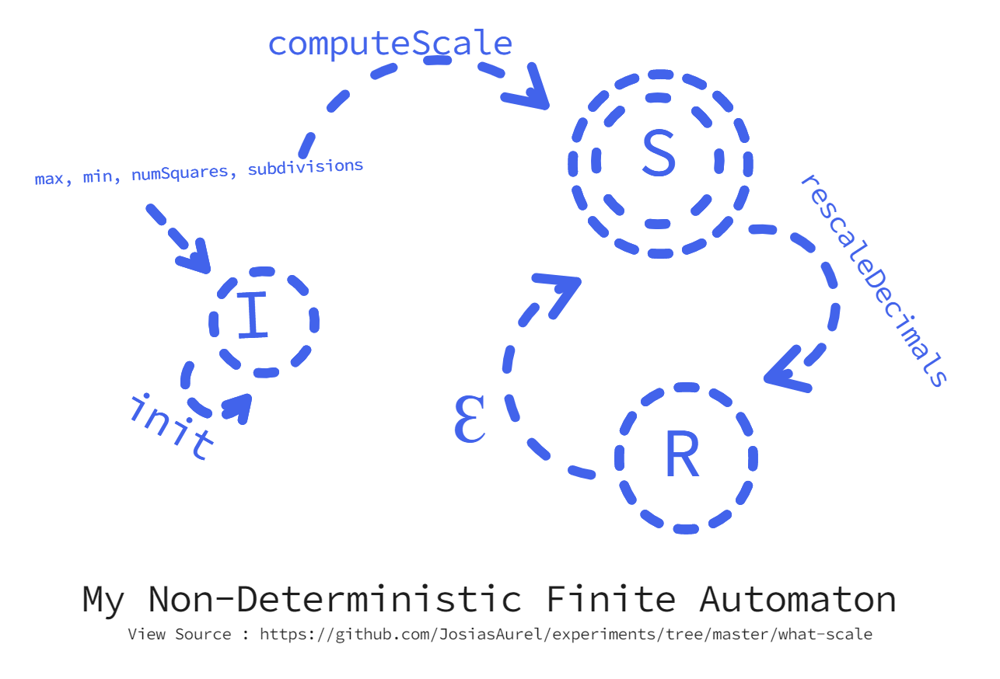
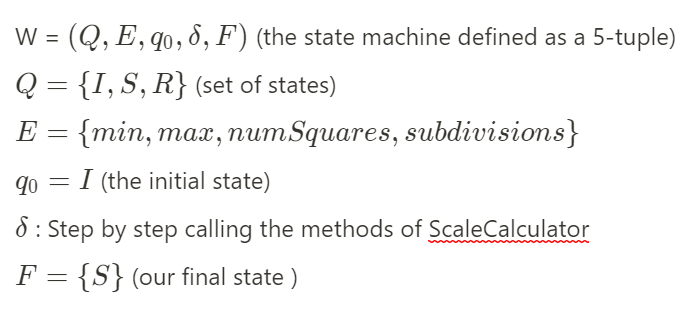

What Scale ?
A little tool to try and calculate a good scale for you.
What More ?
It happens that I spent the last minutes of my last evening reading about Automata theory and I was fascinated by the concept of finite state machines and how they appear in our every day life. While doing some data analysis assignments and a correction from my brother. I came to realise there is so much repetition in trying to get a good scale for your graph. You take the max - min value and divide by the number of squares. Then you repetitively, by trial and error try to find that number that will make subdivisions better for plotting your values. 💥"What if I can build something to do this calculation for me." So I spent the next 1 hours experimenting and writing this little app with the concept of Finite State machines I learned before going to bed the previous night. This app specifically implements a Non-Deterministic finite automaton. Below is the state diagram describing the states and transitions occuring underneath. 
Below follows my mathematical definition of the state machine.
The code is entirely open source. View it here
Built by Josias Aurel. Have a nice day ;)